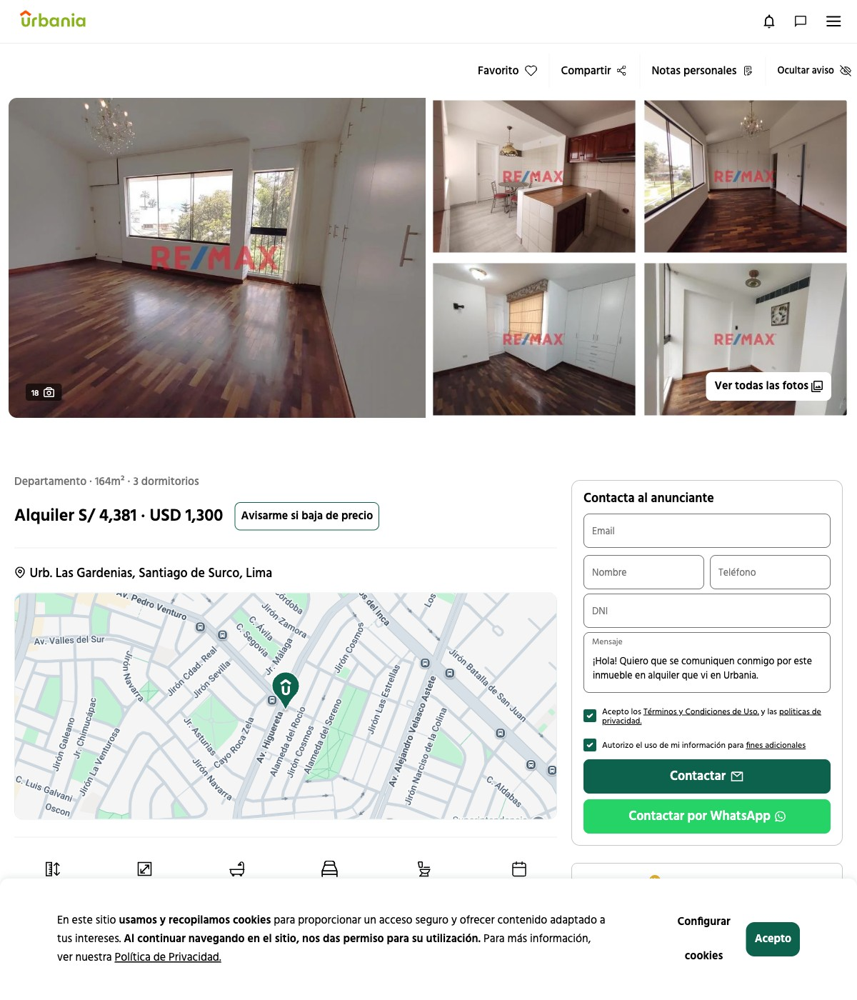

Buena ubicación y precio, pero con uno o más ambientes sin confirmar (¿?), o fuera del rango 170–200 m². Subirían si el anunciante confirma estudio / estar de TV / plano.

Nº15 · Estudio + servicio declarados
US$1,300/mes
Las Gardenias
Santiago de Surco · dúplex frente a parque (pisos 3 y 4)
✓ confirmado (foto/descripción) ✓* flexible/dual (estar familiar como TV o estudio) ¿? no confirmado ✗ se confirma que no
Comprar vs. alquilar (resumen): en Chacarilla, Monterrico y Las Gardenias la cuota hipotecaria (@7%/25a/20% inicial) supera al alquiler en 38–50% y el yield es ~4.5–4.9% → conviene alquilar y conservar capital. En Casuarinas Sur (cuota < alquiler, yield 7.4%) y Valle Hermoso (cuota ≈ alquiler) conviene comprar. Detalle en comparativo-compra-vs-alquiler-2026-06.md.
Inventario: Las Casuarinas y Jr. Alonso de Molina no tienen oferta de alquiler en 170–200 m². Fotos de evidencia (2 por aviso) en fotos-alquiler/NN/ para los 6 con captura.